Manufacturing ERP · Windows Desktop
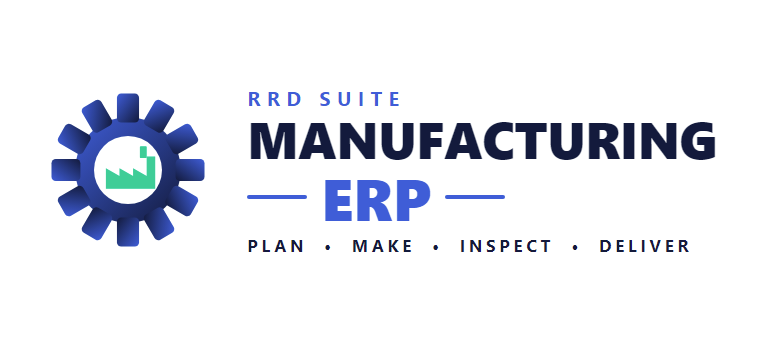
Bills of material, work orders, MRP, inventory, quality, purchasing, sales, and costing — one manufacturing ERP that works fully offline, with no subscription and no internet connection required.
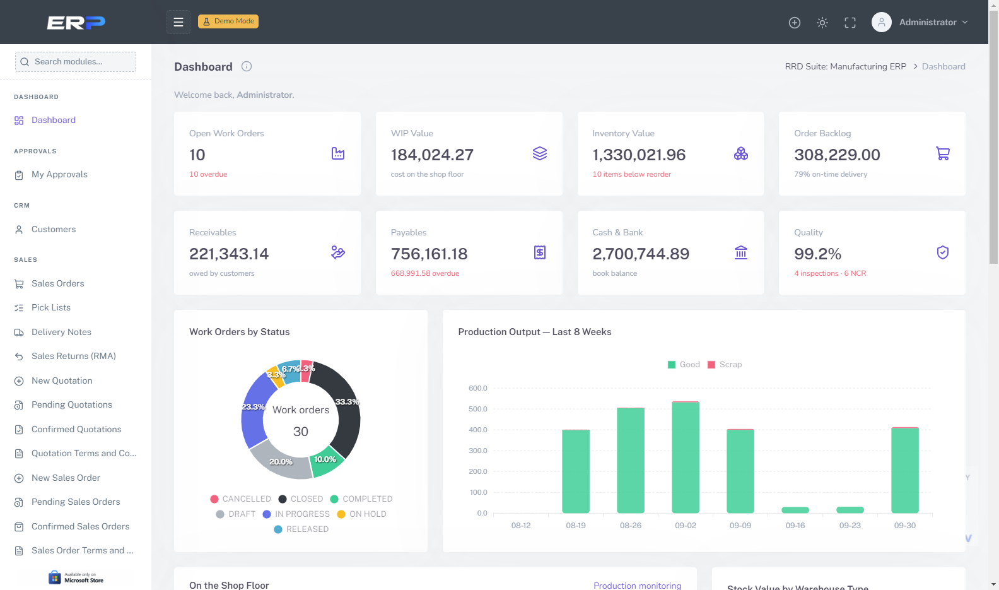
Built For Manufacturers
From the bill of material to the customer invoice, every step is connected — stock, cost and quality update as the work happens, not in a spreadsheet at month end.
Multi-level bills of material with scrap, phantoms and alternates, routings with setup and run times, revisions and engineering change orders.
Release, issue material, book labor and machine time, clock in and out, log scrap and downtime, and receive finished goods — with live progress.
Net demand against stock and open supply, explode BOMs, and turn planned orders into work orders and purchase requests — with capacity checks.
Multi-warehouse stock with bins, lots, expiry and serial numbers, FIFO / FEFO picking, cycle counts, and recall-ready forward and backward trace.
Incoming, in-process and final inspections with QC plans, quarantine, dispositions and non-conformance reports that follow the problem to closure.
Standard cost roll-up from BOM and routing, actual cost per work order, six variances, WIP valuation and budget-vs-actual flags on every order.
Material and purchase requests with approvals, POs pegged to work orders, receipts into quarantine, and invoices matched to PO and receipt before payment.
Quotations with custom-product costing, sales orders with credit and availability checks, pick lists, deliveries, progress billing, returns and receipts.
Send material out for outside operations, receive it back good or rejected, and carry the service cost straight into the work order.
Receivables and payables aging, supplier payments, overhead absorption, bank accounts and reconciliation — the cash picture beside the shop floor.
More than 25 production, inventory, purchasing, sales, cost and finance reports with filters, print and one-click Excel export.
Fine-grained permissions per role, a full activity log, and an “i” help panel on every screen explaining the process, fields and links to other modules.
One Connected Flow
Each document creates the next one and every movement of stock and money is recorded once — so what the shop floor does is what the books show.
Price catalog and custom-built products from their BOM and routing cost.
Credit and stock-availability checks, reservations and billing milestones.
MPS and MRP propose what to make and buy, and when.
Requests, purchase orders, goods receipt with lots and quarantine.
Work orders issue material, book time and track cost against standard.
In-process and final QC release stock or raise a non-conformance.
Pick by FIFO or FEFO, deliver, print the delivery note, record the cost of goods.
Bill deliveries or milestones, apply receipts, age the receivables.
Modules
Switch on only what you need — permissions decide who sees which module.
A Closer Look
Real screens from the application, running a demo furniture factory — click any screenshot to enlarge.
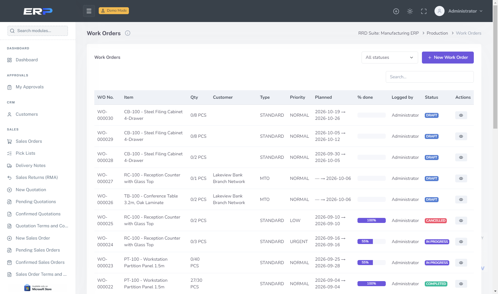
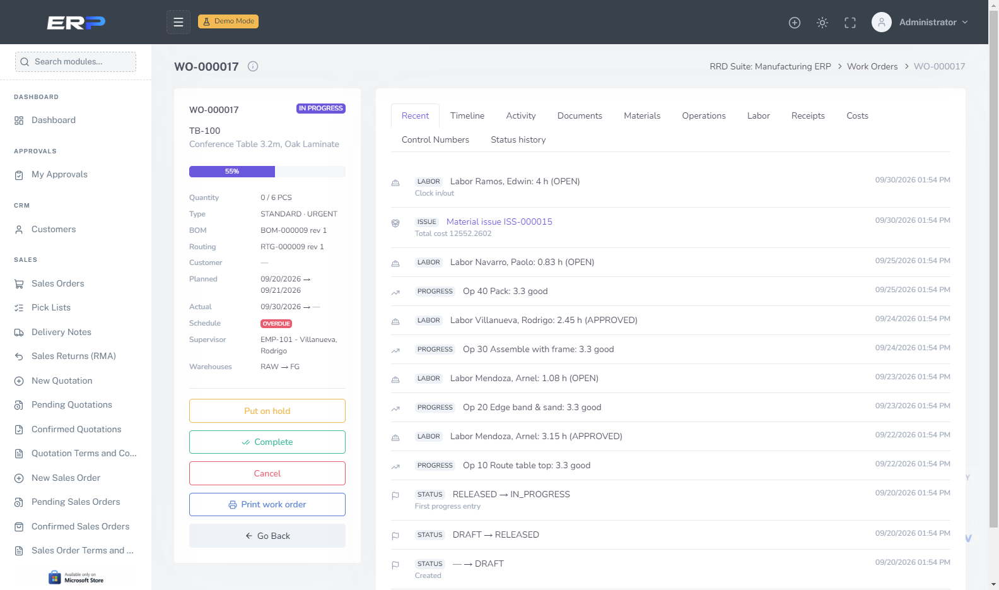
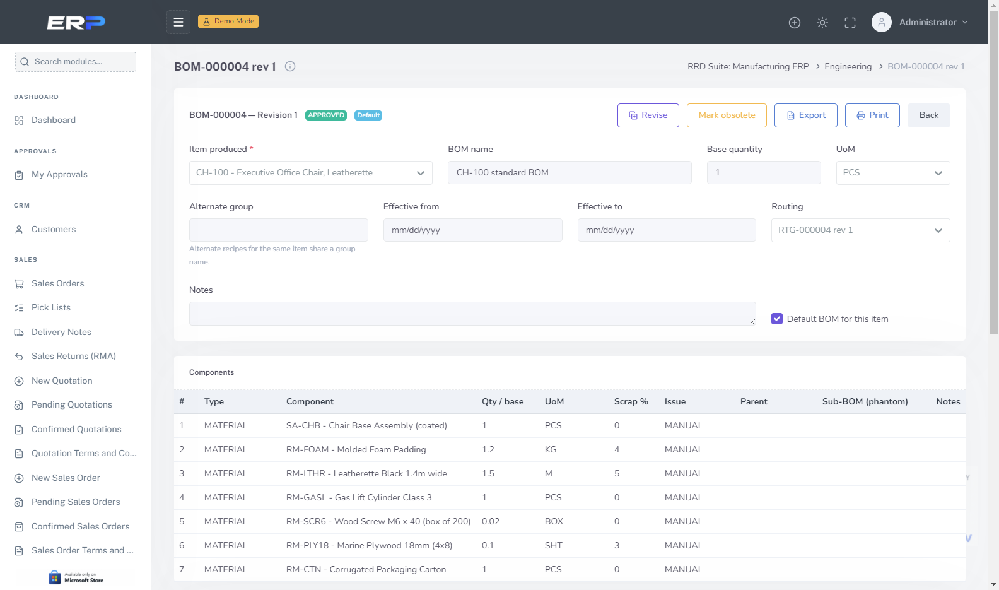
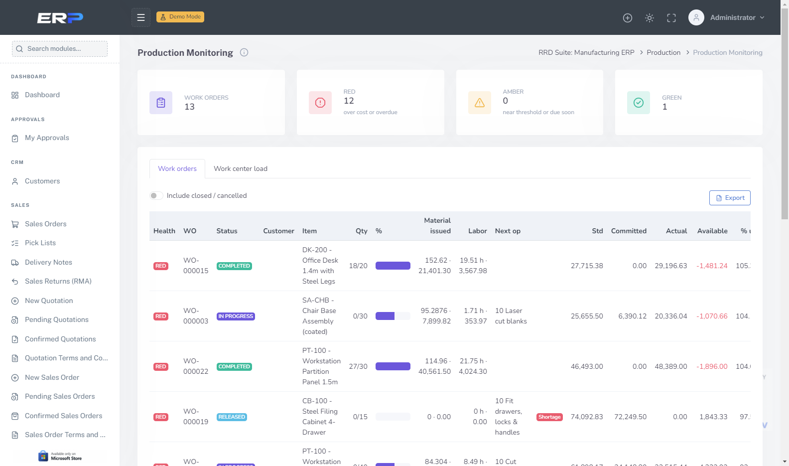
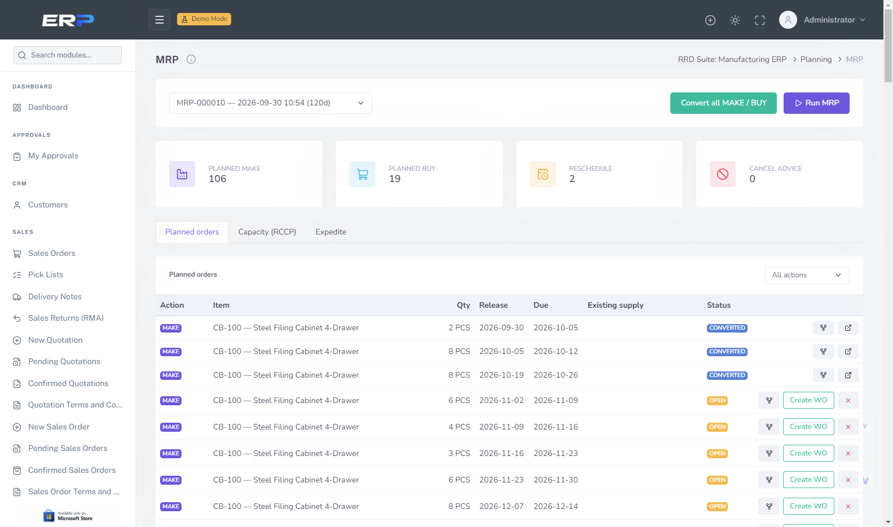
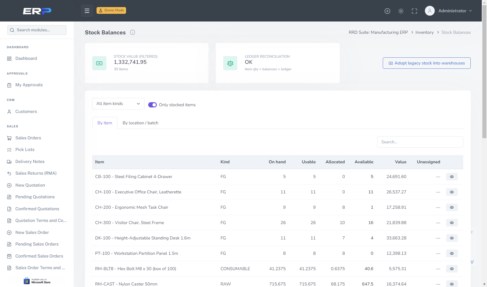
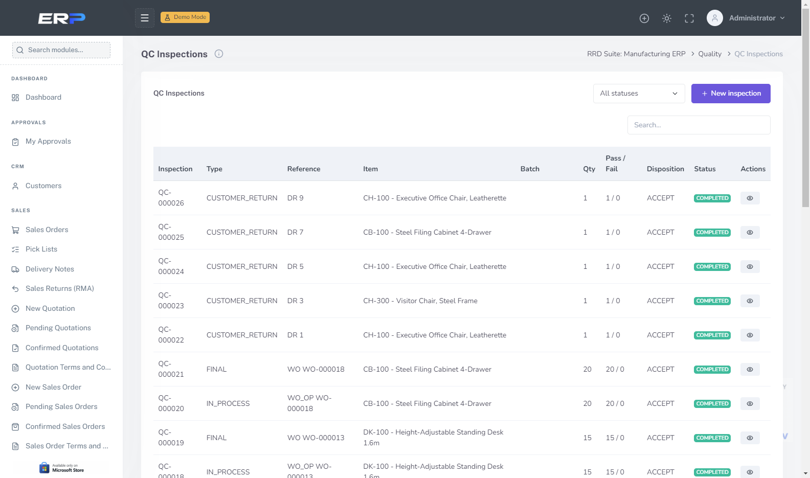
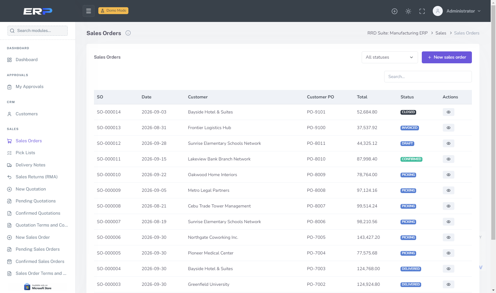
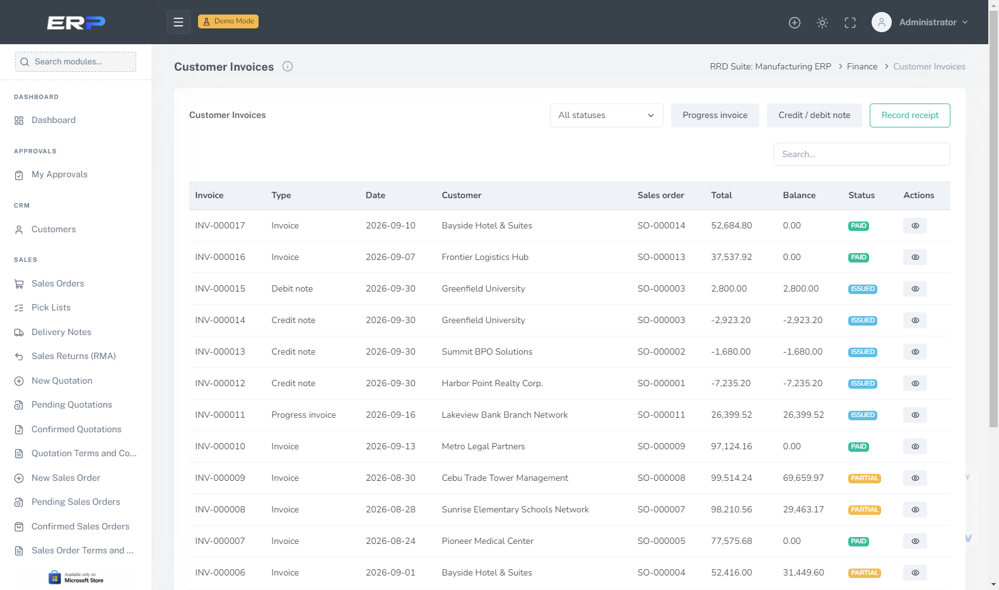
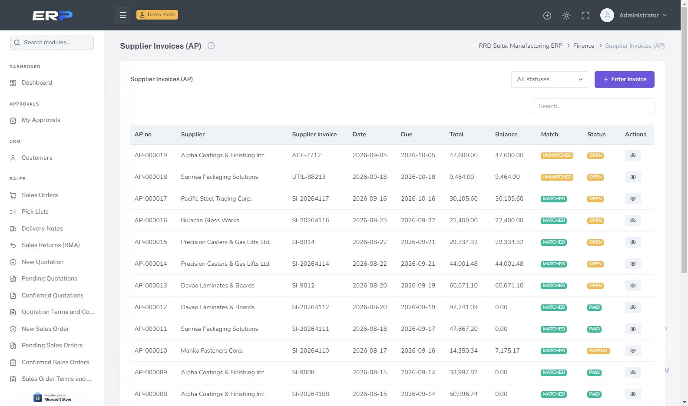
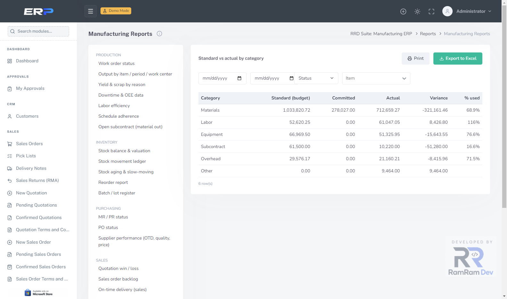
Why This App
No cloud account, no monthly fee, and nothing leaves your computer unless you export it yourself.
Everything runs locally — the shop floor keeps working even when the internet does not.
Your recipes, costs and customers live in your own database file. Nothing is transmitted to us or anyone else.
Optionally share one database across the office, warehouse and shop-floor PCs on the same network — no cloud subscription needed.
Install it once. There is no recurring fee holding your own production records hostage.
First run can load a complete demo furniture factory — BOMs, work orders, stock, sales and payables — so you can explore before entering real data, then remove it with one Go Live step.
Switch the app — including printed documents — between English and Arabic at any time.
Get in touch with RamRam Dev to get set up.